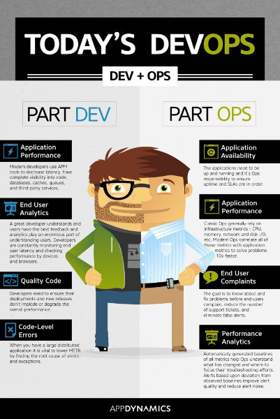
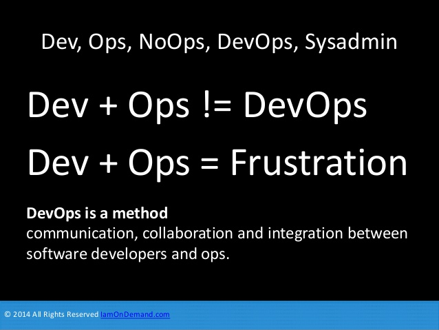
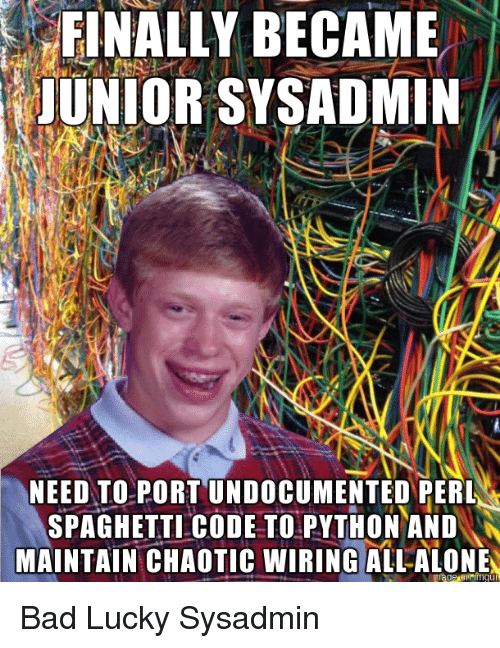
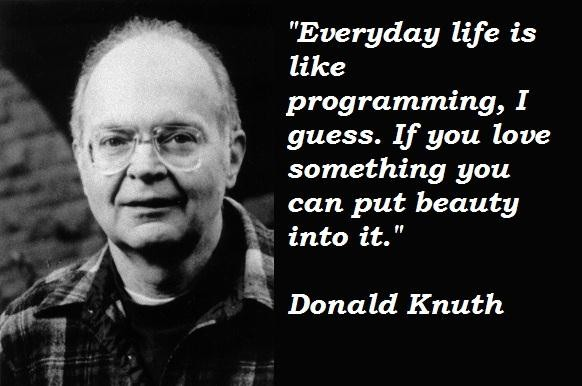
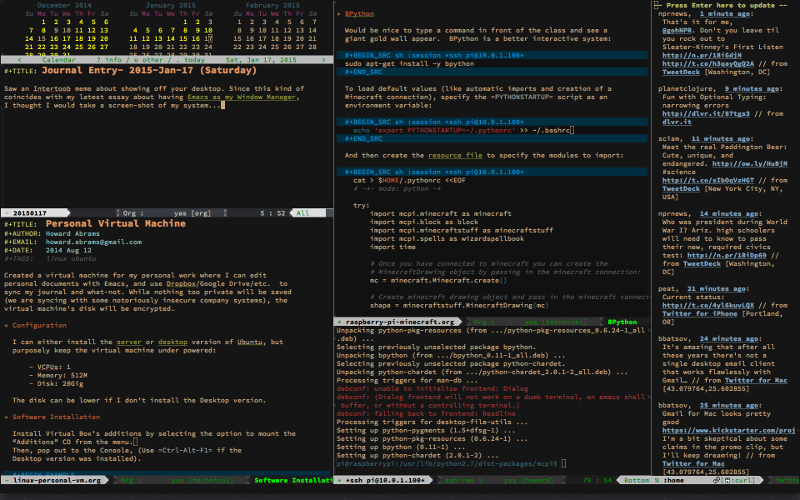

Programación Literaria para Devops
Patricio Martínez
Created: 2017-04-05 mié 18:40
Introducción
Esta es una charla muy corta. La más corta y floja de la temporada.
Esta charla viene de cuando nos reuniamos en la universidad por la tarde para tomar un café y hablar sobre conceptos, herramientas, ideas, etc.
Café con Patricio
Así que relajémonos y tomemos un café juntos mientras charlamos
— WARNING
Esto es muy Novedoso.
Esto quiere decir que posiblemente en vuestras empresas o lo implementáis vosotros o nadie lo hará
Qué es un Devops

Pero lo principal es saber que Devops no es un puesto es un método o cultura

Algunas de sus fases de su trabajo:
- Integración continua
- Continuo desarrollo
- Desarrollo Ágil
- Documentación y Comunicación_ <—
La documentación es muy importante

Posibles problemas por no tener una documentación adecuada
El trabajo del administrador se hace tedioso y confuso
Dificulta la resolución de problemas
– Que siempre ocurren los viernes por la tarde
Dificulta el trabajo a otras personas que vengan nuevas

Problemas con la gestión de claves y permisos
Dos conceptos interesantes que importamos de la ciencia y la computación
- Programación Literaria
- Investigación reproducible
Qué es la programación literaria o letrada
Es un estilo de programación propuesto por Donald Knuth para documentar los programas. Este estilo de programación representa un movimiento disruptivo respeto a la escritura de programas en el orden y forma impuesto por el ordenador. En cambio permite a los programadores desarrollar sus programas en el orden fijado por la lógica y el flujo de sus pensamientos.

Donald Knuths creador de Latex
Qué es la investigación reproducible
La reproducibilidad ha sido una parte clave de la investigación científica y se ha denominado la demarcación entre ciencia y nociencia. Cristopher Gandrud
La investigación reproducible requiere que los conjuntos de datos y el código computacional estén disponibles para la verificación de los resultados publicados y la realización de análisis alternativos
Ventajas para un Devops
- Mayor velocidad a la hora de repetir un proceso
- Capacidad de analizar un proceso y mejorarlo
- Mejora la documentación y la revisión de la misma
- Mejora la comunicación entre devops o equipos
Programación literaria para Devops
Posible definición:
La manera de escribir, explicar, documentar y ejecutar infraestructuras como código.
Diferencia entre programación literaria y código con comentarios.

Aplicaciones
Algunas programas
Aunque aún no es muy popular este tipo de desarrollo cada vez hay más programas y extensiones para conocidos editores aunque están más enfocados a la programación literaria.
Algunos de estos son:
Emacs. El editor definitivo para Devops
Emacs es el editor extensible

- Puedes modificar cada aspecto del editor
- Puedes añadirle todas la funcionalidades que quieras
- Opera con modos. Cada modo le da un conjunto de nuevas funcionalidades.
- Modos para programación en Python, C/C++, Java, TypeScript, etc.
- Modos para chatear, correo, navegador web, gestor de git e incluso un reproductor de música.
- Modos para generar gran cantidad de formatos de documentos en PDF, HTML, presentaciones, etc.
- Tiene una completa integración con el sistema operativo.
- Esto habilita la capacidad de ejecutar comandos del sistema y capturar su salida.
- Además es más liviano que la mayoría de IDEs del mercado.
- Gran cantidad de paquetes con los que la comunidad continuamente añade mejoras
- Puede funcionar perfectamente en modo texto
Org-mode
Un modo muy especial de Emacs. Es una perla dentro de Emacs. Mucha gente se ha pasado a Emacs sólo por este modo.
Org mode sirve para tomar notas, hacer listas de tareas, planificar proyectos, generar documentación, hacer presentaciones y charlas, etc, y todo en un efectivo sistema en texto plano
- Org-mode es así mismo muy extensible
- Ayuda a organizar los documentos
- Es un gran gestor de tareas
- Los ficheros son muy livianos al ser texto plano
- Puedes embeber código, tablas, imágenes, Latex etc, puede reemplazar a cualquier procesador de texto
- Ejecuta código y muestra los resultados
- Exporta a gran cantidad de formatos como PDF, HTML, ascii, etc.
- También se integra con distinto software de gestión de procesos como Jira, Redmine y otros.
Demostración
Para saber más
Webs
Buscar por literate devops
Algunos ejemplos son:
Finalmente hay mucha información en las planets de Emacs
Vídeos
- Vídeo de Howard Abrams
- Otro vídeo de Howard Abrams
- Vídeo de Devops Murcia??
Gracias a todos
Sólo a vosotros os puedo contar mis traumas.
Sois mejores que un psicólogo :-)